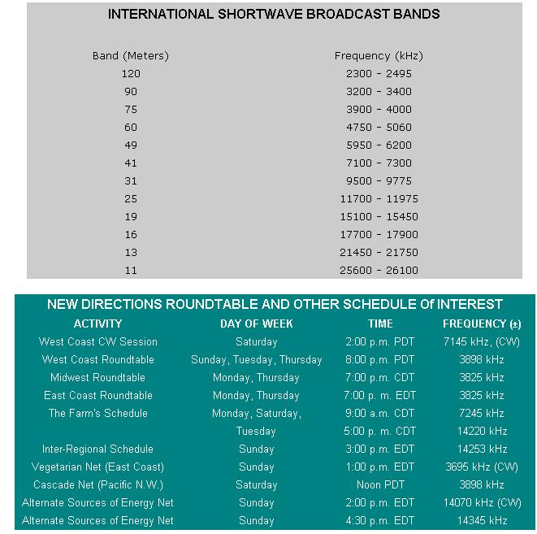

New Directions Radio
Ham radio continues to grow in popularity, including NDR schedule of interest, international short-wave broadcast bands.
By Copthorne Macdonald
May/June 1976
SHORTWAVE LISTENING
The ham radio bug bites in many different ways, but probably sinks its fangs into most people when they innocently begin listening to distant broadcast stations.
Typically, the "disease" starts with your staying up late at night listening to AM stations a thousand or more miles away. Then it becomes worse when you read somewhere that if only you had a shortwave receiver you could tune in regularly to the BBC from London . . . or to Radio Moscow . . . or to broadcasts from dozens of other exotic places.
So you borrow that portable with all the shortwave bands from Uncle Joe-or buy an old Hallicrafters receiver at a garage sale-and start to listen. And you find that, if anything, it's really more fun than you thought it would be!
Tired of the biased news reporting doled out at night by your local stations? Try shortwave . . . and select the bias of your choice!
A MIXED BAG
In many parts of the world there is no local broadcasting service, and shortwave serves as the news and entertainment mainstay. Shortwave broadcast signals-like ham signals-are able to travel long distances because they are reflected back to earth by a layer of the upper atmosphere called the ionosphere. While hams are limited to a transmitter power of 1,000 watts maximum, most international broadcasters blast out with at least 100,000 watts and get additional "reach" with big, expensive antenna systems. The end result is some pretty good listening, even with inexpensive receivers and simple receiving antennas.
Shortwave broadcasting is a very mixed bag. Most stations are government-run. Radio Moscow and the Voice of America are, as you might expect, weapons of ideological warfare for the superpowers that operate them. On the other hand, shortwave gives even small nations like Luxembourg and the Netherlands the means with which to speak to the rest of the world. In addition, a few stations are operated by religious groups and private organizations.
News and current affairs programming are what turn me on most and the BBC is a rich source of both. It recently, for example, broadcast an interview with E.F. Schumacher (the author of Small Is Beautiful ) in which he described in detail his concept of an "intermediate technology". In general, the BBC's coverage of problems and happenings in the Third World also seems much more thorough than radio or TV coverage on this side of the Atlantic.
My favorite Canadian news program-"As It Happens"-is heard on CBC AM and FM here in Canada, but is transmitted via shortwave to the U.S. and the Caribbean. The program consists mostly of longdistance phone calls placed to individuals currently "making news". (Hearing a person react without notes or script in a telephone interview sure helps me to fill in the spaces between the lines of a news story.) The show is aired from 5:30 to 7:00 p.m. Eastern time and its frequency as I write this is 6085 kHz . . . even though it may move to 9625 or 11835 kHz as the days get longer.
A great variety of music is broadcast on shortwave and you'll hear everything from classical to jazz to ethnic or "national" tunes on the SW bands. Sometimes the music is distorted by ionospheric fading, but at other times it's quite enjoyable.
Because broadcasts are made in many languages, shortwave is a natural and fun way to keep up any foreign language skills you may have. (Incidentally, the language you hear is always that of the intended audience and may differ from the tongue spoken in the country doing the broadcasting.)
The complete list of international shortwave bands appears in the accompanying table. The important ones for nighttime listening are 49, 31, and 25 meters. During daylight hours, most of the signals you'll hear will be on the 31, 25, 19, and 16 meter bands.
WHAT ABOUT EQUIPMENT?
Most of the "general coverage" ham receivers made between the late 1930's and the late 1950's are excellent for listening to shortwave broadcasts. They're also relatively inexpensive, because they were not optimized for receiving the singlesideband mode of voice transmission which hams use nowadays. Unlike most portable receivers, these older communications rigs will have a beat frequency oscillator (BFO), which is the key to making code and SSB signals intelligible. Thus, they can also be used to listen to goings-on in the ham bands.
The ability of an older set to separate the particular ham you want to hear from all the others, however, is nowhere near as good as that of a modern receiver designed for ham-only use. (Sadly, the newer ham receivers cover only the amateur bands and thus cannot be used for shortwave listening.)
Check with junk shops, pawn shops, radio repairmen, your local ham club, "hamfests", and newspaper ads in your search for one of these older sets. Local hams are probably the best source of advice on how much to pay for a particular receiver. Twenty to one hundred dollars is the range I have in mind.
Portable receivers that can tune in shortwave are attractive because they can be used anywhere. If shortwave is your only link with the outside world, I'd recommend you invest in one of those big, heavy, super jobs with all the bells and whistles. At the other extreme, the shortwave performance of cheap portables is often so poor that the "shortwave" feature can be considered little more than a sales gimmick.
For it to be a worthwhile investment, I'd make sure that any set I bought had these two things: First, frequency coverage from at least 6 to 18 MHz (49 to 16 meters). And second, some sort of "fine tuning" or "bandspread" control to aid in the tuning process. If the rig doesn't have both features, the designer didn't really expect it to be used for shortwave reception and probably skimped on sensitivity and frequency stability too.
An outside antenna is a big aid to reception. (Running an insulated wire out the window to a tree-say 50 feet away-is a fine first step.) A water pipe ground connection helps too. Ham receivers will have screw-type terminals for the antenna and ground leads. If your portable doesn't, then clip the outside antenna to the set's "whip" antenna and run the ground wire to one of the battery terminals.
SHOW TIME
Lists of shortwave broadcast stations and their transmitting frequencies appear in various newsstand publications (Communications World is an example) from time to time. These lists are always out of date, however, and what really counts anyway is what you can hear in your location, with your equipment. So when you find some programming you like, just note the time and the dial settings and tune in again tomorrow or next week.
NEW DIRECTIONS NEWS
Holy cow! There's so much happening and so little room left to tell you about it!
The Earthmind folks are on 75 meters regularly now. They recently made a presentation on wind power to the West Coast Roundtable, and have been comparing notes with at least one other expert: Greg, W6EPN. (Anyone who can put up a 36-foot-diameter mill hydraulically coupled to a 10-kw generator, as Greg has done, meets my definition of a wind power expert!)
Bert Younglove (WA7AX0) recently checked into the Cascade Net from the conference of co-ops which he attended in Eugene, Oregon. There was a communications workshop at the gathering, and it's great that the attendees were able to get at least some feel for the possibilities of radio.
Enos Schera (W4VPD) is moderating two new energy nets on 20 meters from his home in Miami. Both meet on Sunday afternoon. The CW session gets together at 2:00 p.m. Eastern time on 14070 kHz, and the phone session holds forth at 4:30 on 14345.
Peace,
Cop Macdonald (VE1BFL)
99 Fitzroy St.
Charlottetown
Prince Edward Island
Canada
 |
 |
|